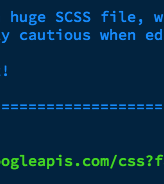
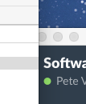

hello from naveena
Updated by Tianchen
This change brought to you by Phil
 Welcome to Python! This course has been designed to provide an introduction to the Python programming language and give you basic knowledge of its syntax and conventions.
Python is a dynamic programming language that is used in a variety of application domains. Python is based on object-oriented programming, similar to the likes of C++, Java, C#, Perl, Ruby, etc. This manual will include explanatory text along with code examples that you should be typing to follow along. All code is placed within snippets applicable to the language being used.
Python can be used in a wide variety of ways, and it has a vast ecosystem of libraries and tools for doing specialized kinds of programming - things like machine learning, statistics, language processing, and more. This class only scratches the surface of what Python can do, but it aims to give enough knowledge of the basics to explore more on your own.
Python is somewhat unusual among programming languages in that two different versions of the language are currently in wide use at the same time, despite the newer version not being backward-compatible with the earlier version.
This manual is based on Python 3 (version 3.5 to be precise), which differs from the previous version Python 2.7 in certain fundamental ways. The most visible of these is the print function, which did not need parentheses in version 2 but requires them in version 3.
This article explains some of the major differences between versions 2 and 3 and offers some advice regarding which version to choose if you are just starting out.
The code snippets and exercises in this class are written in Python 3 and may not work correctly (or in some cases, work at all) on Python 2. Python 2.7 has not been updated since 2010, but it still has a large install base and many libraries are written for Python 2. Python 2.7 comes pre-installed on some computers, most notably those running MacOS.
Python 3 is the present and future of the language and is generally a better starting point for beginners, but if you will be working with a code base that uses Python 2, it will be helpful for you to have an understanding of the differences between the versions.
Note that for the exercises in this lesson we will be using Repl.it interactive windows within this webpage. Outside of this lesson, you will be able to do everything we talked about within the terminal by following these instructions. If not already installed, Python can be downloaded from the following website: https://www.python.org/downloads/. After a straightforward installation process, find and run the IDLE (Python 3.5) application. This should open up the Python interpreter shell which allows the user to enter code line by line for testing or trial and error. The interpreter provides many options including being able to open a new script window where complete Python programs can be written in a built in Integrated Development Environment (IDE).
Macs have Python built-in and can be found via the Terminal. Search for and open the Terminal via the applications menu or Spotlight search. In the terminal, type in python. Note that this will be version 2.7. It is recommended that you use version 3.4 and above for this course. Please note that, on the DoIT computers, only the Windows partition has Python 3 installed.
Python has a very detailed help menu that can be entered through the Python interpreter. Once you have the Python Interpreter opened, type in the following:
#helpMenu
>>> help()This will enter you into the Python help utility. You can enter any module, keyword or topic into this utility to get more information. For example, to get more information about strings you would type str inside of the help module. This will bring up the help menu for strings specifically. To return to the interpreter, use quit.
#helpMenuModule
>>> help()
help> str #help on strings...
help> quit #quit help menuAnother approach to get help on certain modules in Python without the help menu is to insert the module names as an argument when in the interpreter. We do not need to quit from this as it is displayed in the interpreter.
>>> help(str) #help on strings...If the built-in resources do not suffice, additional help can be found over at Lynda.com in the form of video tutorials. The Python website also offers support over at https://www.python.org/about/help/